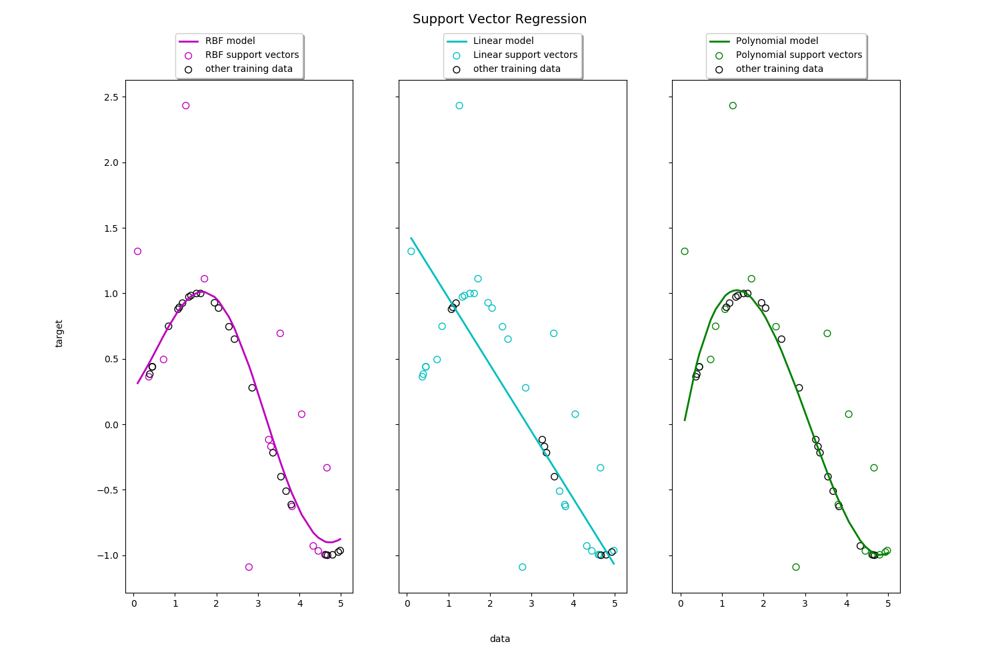

Note
Click here to download the full example code or run this example in your browser via Binder
Support Vector Regression (SVR) using linear and non-linear kernels¶
Toy example of 1D regression using linear, polynomial and RBF kernels.
Out:
print(__doc__)
import numpy as np
from sklearn.svm import SVR
import matplotlib.pyplot as plt
# #############################################################################
# Generate sample data
X = np.sort(5 * np.random.rand(40, 1), axis=0)
y = np.sin(X).ravel()
# #############################################################################
# Add noise to targets
y[::5] += 3 * (0.5 - np.random.rand(8))
# #############################################################################
# Fit regression model
svr_rbf = SVR(kernel='rbf', C=100, gamma=0.1, epsilon=.1)
svr_lin = SVR(kernel='linear', C=100, gamma='auto')
svr_poly = SVR(kernel='poly', C=100, gamma='auto', degree=3, epsilon=.1,
coef0=1)
# #############################################################################
# Look at the results
lw = 2
svrs = [svr_rbf, svr_lin, svr_poly]
kernel_label = ['RBF', 'Linear', 'Polynomial']
model_color = ['m', 'c', 'g']
fig, axes = plt.subplots(nrows=1, ncols=3, figsize=(15, 10), sharey=True)
for ix, svr in enumerate(svrs):
axes[ix].plot(X, svr.fit(X, y).predict(X), color=model_color[ix], lw=lw,
label='{} model'.format(kernel_label[ix]))
axes[ix].scatter(X[svr.support_], y[svr.support_], facecolor="none",
edgecolor=model_color[ix], s=50,
label='{} support vectors'.format(kernel_label[ix]))
axes[ix].scatter(X[np.setdiff1d(np.arange(len(X)), svr.support_)],
y[np.setdiff1d(np.arange(len(X)), svr.support_)],
facecolor="none", edgecolor="k", s=50,
label='other training data')
axes[ix].legend(loc='upper center', bbox_to_anchor=(0.5, 1.1),
ncol=1, fancybox=True, shadow=True)
fig.text(0.5, 0.04, 'data', ha='center', va='center')
fig.text(0.06, 0.5, 'target', ha='center', va='center', rotation='vertical')
fig.suptitle("Support Vector Regression", fontsize=14)
plt.show()
Total running time of the script: ( 0 minutes 3.115 seconds)